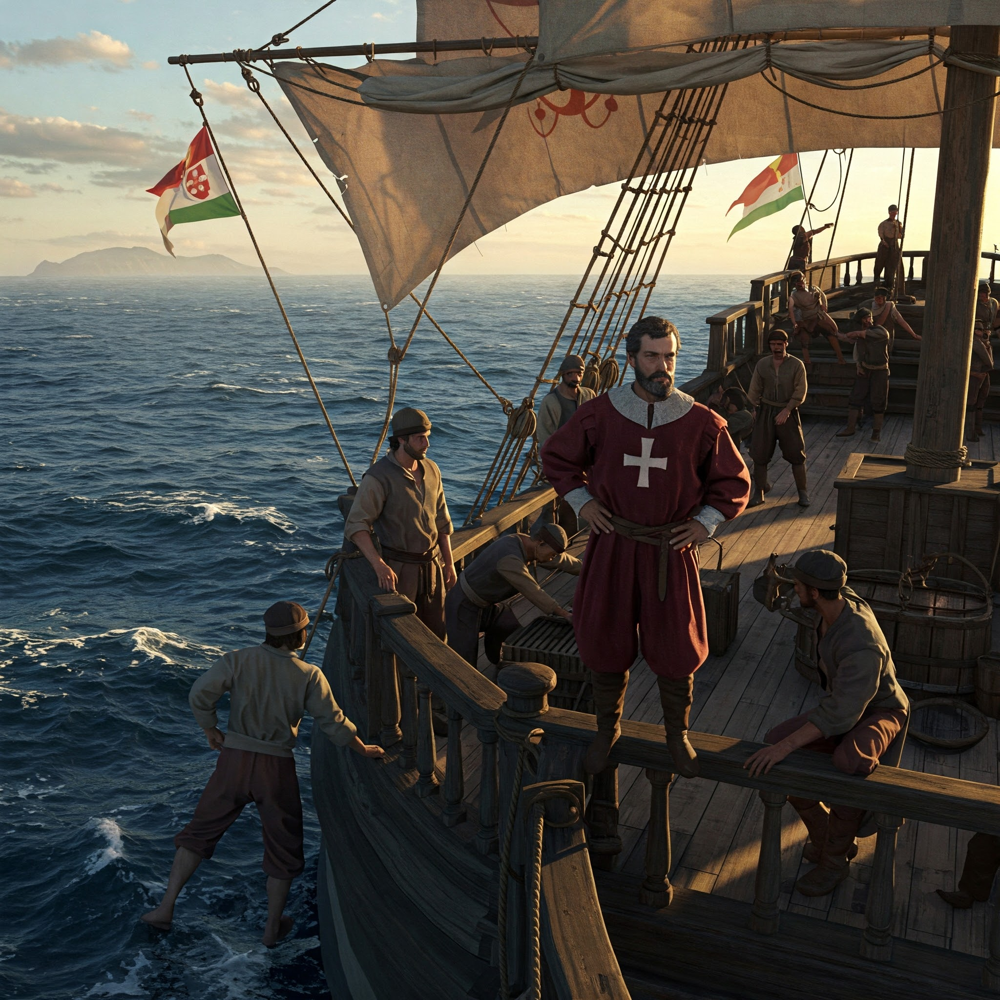

7. Vasco da Gama – The First European to Reach India by Sea
- Vasco da Gama was a Portuguese nobleman and explorer, chosen by King Manuel I of Portugal to find a direct sea route to India.
- His mission: Bypass Arab and Venetian middlemen and reach the rich spice markets of India.
His First Voyage to India (1497–1499)
Journey Route:
- Left Lisbon on July 8, 1497 with 4 ships and about 170 men.
- Rounded the Cape of Good Hope (following the path of Bartholomew Dias).
- Sailed up the east coast of Africa, stopping at Mozambique, Mombasa, and Malindi.
- Took help from a Gujarati pilot in Malindi, who guided him across the Indian Ocean.
Arrival in India:
- Reached Calicut (Kozhikode) on the Malabar Coast of India on May 20, 1498.
- Met the Zamorin (the local Hindu ruler) and offered gifts.
- But the gifts were considered cheap and unimpressive by Indian standards.
- Local Arab traders also influenced the Zamorin against the Portuguese.
Despite tensions, Vasco da Gama managed to secure a letter of trade and loaded his ships with spices (pepper, cinnamon, etc.) before returning.
Return to Portugal (1499)
- The journey back was difficult—many crew members died of scurvy.
- Vasco da Gama returned to Lisbon in 1499 with just 2 ships.
- However, the spices he brought covered the cost of the trip 60 times!
He became a national hero in Portugal. His success proved that sea trade with India was possible—without going through Arab traders or overland routes.